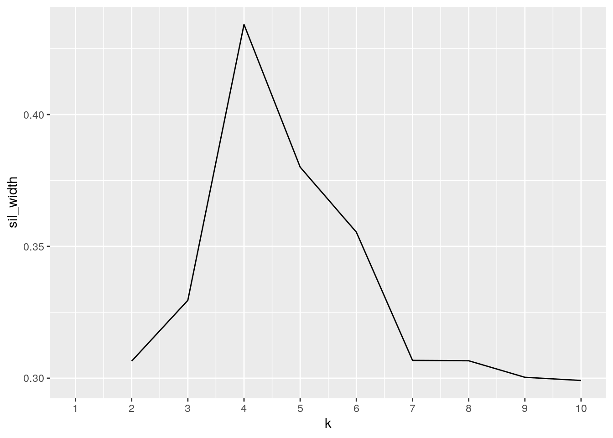
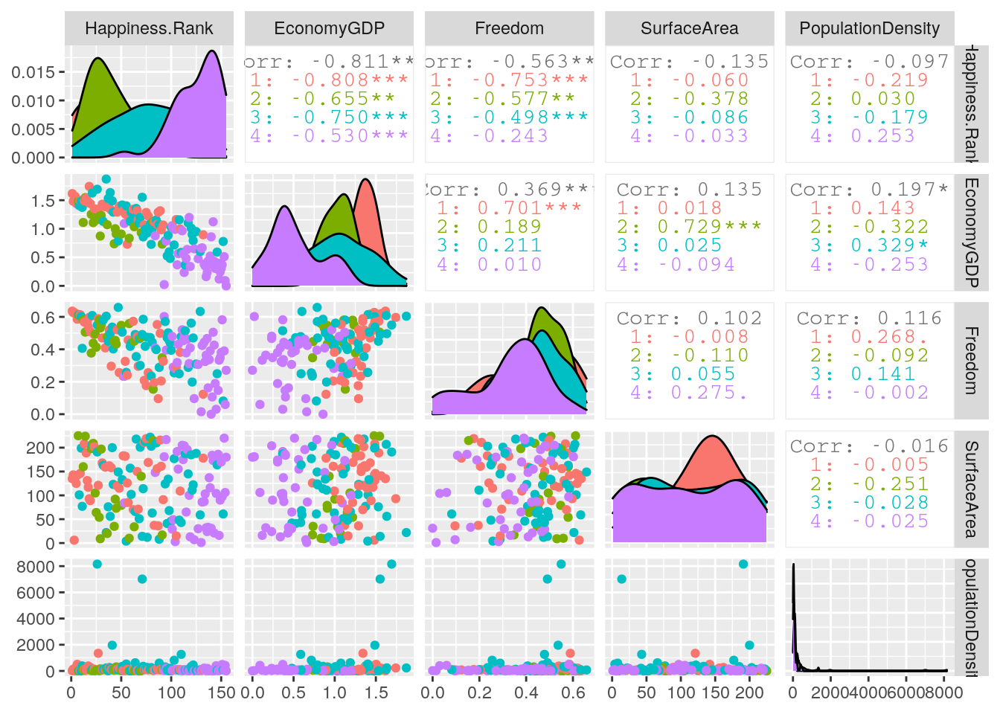
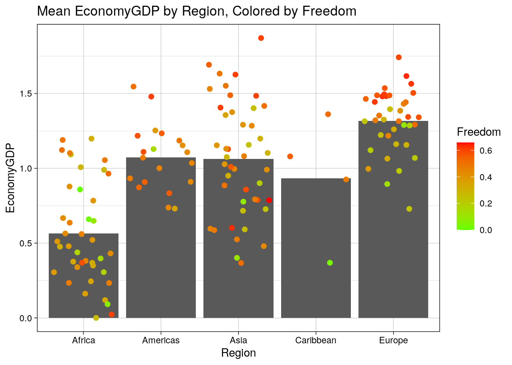

library(tidyverse)## ── Attaching packages ─────────────────────── tidyverse 1.3.0 ──## ✓ ggplot2 3.3.2 ✓ purrr 0.3.4
## ✓ tibble 3.0.3 ✓ dplyr 1.0.1
## ✓ tidyr 1.1.1 ✓ stringr 1.4.0
## ✓ readr 1.3.1 ✓ forcats 0.5.0## ── Conflicts ────────────────────────── tidyverse_conflicts() ──
## x dplyr::filter() masks stats::filter()
## x dplyr::lag() masks stats::lag()save.image("myWorkSpace.RData")
Happy <- read.csv("Happy.csv")
Countries <- read.csv("Countries.csv") %>% mutate(Region=recode(Region, CentralAsia="Asia", EasternAsia="Asia", EasternAfrica="Africa", NorthernAfrica="Africa", EasternEurope="Europe", NorthernEurope="Europe", MiddleAfrica="Africa", "South-easternAsia" = "Asia", SouthernAfrica="Africa", WesternAfrica="Africa", WesternAsia="Asia", WesternEurope="Europe", SouthernEurope="Europe", SouthernAsia="Asia", Oceania="Asia", NorthernAmerica="Americas", SouthAmerica="Americas", CentralAmerica="Americas")) %>% mutate(SurfaceArea=as.numeric(`Surface.area..km2.`), PopulationDensity = as.numeric(`Population.density..per.km2..2017.`), Region = as.character(Region))%>% select(-`Surface.area..km2.`, -`Population.density..per.km2..2017.`) The two data sets that I chose were Happy and Countries. The Happy data set contains the Happiness Rank of a country as calculated by the World Happiness Report in 2017. Freedom represents the magnitude of freedom recorded by some measure, and Economy GDP is a scaled measure of a countries GDP in the year of 2017. The Countries data set contains the Region that a country is in, its Surface Area in km^2, and Population density as of 2017, which shows the number of inhabitants per square kilometer.
I acquired these two data sets on an online website called Kaggle, where users can upload data sets. Because I wanted to look at how the physical attributes of a country pertain to it's Happiness Rank, I thought it would be ideal to join the Happy data set with the Countries data set, which contains more geographical/population information. I suspect that countries in more developed regions, such as Europe and the Americas, will rank lower/better for happiness, and thus will also have higher GDPs and Freedom.
Happy %>% pivot_wider(names_from = "Country", values_from="Freedom") %>% pivot_longer(3:157, names_to="Country", values_to="Freedom") %>% filter(!is.na(Freedom)) ## # A tibble: 155 x 4
## Happiness.Rank EconomyGDP Country Freedom
## <int> <dbl> <chr> <dbl>
## 1 1 1.62 Norway 0.635
## 2 2 1.48 Denmark 0.626
## 3 3 1.48 Iceland 0.627
## 4 4 1.56 Switzerland 0.620
## 5 5 1.44 Finland 0.618
## 6 6 1.50 Netherlands 0.585
## 7 7 1.48 Canada 0.611
## 8 8 1.41 New Zealand 0.614
## 9 9 1.49 Sweden 0.613
## 10 10 1.48 Australia 0.602
## # … with 145 more rowsCountries %>% pivot_wider(names_from="Region", values_from="SurfaceArea") %>% pivot_longer(3:10, names_to="Region", values_to="SurfaceArea") %>% filter(!is.na(SurfaceArea))## # A tibble: 229 x 4
## country PopulationDensity Region SurfaceArea
## <fct> <dbl> <chr> <dbl>
## 1 Afghanistan 54.4 Asia 184
## 2 Albania 107. Europe 109
## 3 Algeria 17.3 Africa 84
## 4 American Samoa 278. Polynesia 67
## 5 Andorra 164. Europe 154
## 6 Angola 23.9 Africa 31
## 7 Anguilla 166. Caribbean 214
## 8 Antigua and Barbuda 232. Caribbean 147
## 9 Argentina 16.2 Americas 105
## 10 Armenia 103. Asia 111
## # … with 219 more rowsBoth data sets were already tidy, thus I needed to untidy them and re-tidy again. For the Happy data set, I first used pivot wider to create a column for every single Country, and the values for each column corresponded to values for Freedom. I then used pivot longer to place the Country names back into a single column, filtered out NA values, and this brought me back to my tidied data set. I followed the same process for the Countries data set, but used Region instead of Country, and SurfaceArea instead of Freedom.
joined <- inner_join(Happy, Countries,by=c(Country="country"))
glimpse(joined)## Rows: 148
## Columns: 7
## $ Country <fct> Norway, Denmark, Iceland, Switzerland, Finland, Net…
## $ Happiness.Rank <int> 1, 2, 3, 4, 5, 6, 7, 8, 9, 10, 11, 12, 13, 14, 15, …
## $ EconomyGDP <dbl> 1.616463, 1.482383, 1.480633, 1.564980, 1.443572, 1…
## $ Freedom <dbl> 0.6354226, 0.6260067, 0.6271626, 0.6200706, 0.61795…
## $ Region <chr> "Europe", "Europe", "Europe", "Europe", "Europe", "…
## $ SurfaceArea <dbl> 135, 143, 6, 141, 125, 142, 225, 101, 146, 199, 77,…
## $ PopulationDensity <dbl> 14.5, 135.1, 3.3, 214.5, 18.2, 505.2, 4.0, 17.9, 24…nrow(Happy) ## [1] 155nrow(Countries) ## [1] 229anti_join(Happy, Countries, by=c(Country="country")) ## Country Happiness.Rank EconomyGDP Freedom
## 1 Taiwan Province of China 33 1.43362653 0.3614666
## 2 Russia 49 1.28177810 0.3737831
## 3 North Cyprus 61 1.34691131 0.4712036
## 4 Kosovo 78 0.95148438 0.2602879
## 5 Congo (Brazzaville) 124 0.80896425 0.4350259
## 6 Congo (Kinshasa) 126 0.09210235 0.2359613
## 7 Ivory Coast 128 0.60304892 0.4477062anti_join(Countries, Happy, by=c(country="Country")) %>% glimpse()## Rows: 81
## Columns: 4
## $ country <fct> "American Samoa", "Andorra", "Anguilla", "Antigua a…
## $ Region <chr> "Polynesia", "Europe", "Caribbean", "Caribbean", "C…
## $ SurfaceArea <dbl> 67, 154, 214, 147, 57, 39, 144, 165, 1, 45, 172, 13…
## $ PopulationDensity <dbl> 278.2, 163.8, 165.7, 231.8, 584.8, 39.5, 664.5, 122…I performed an inner join to combine the two data sets. There were 155 observations in the "Happy" data set, and 229 observations in the "Countries" data set. There were 6 observations dropped from the Happy data set, which were Taiwan Province of China, North Cyprus, Kosovo, Congo (Brazzaville), Congo (Kinshasa), and Ivory Coast. There were 80 observations dropped from the Countries data set, and most were smaller countries such as Fiji, the Bahamas, Isle of Man, etc. Because so many smaller countries were dropped, this means that the sample is not entirely representative of the world, and thus my findings will not be as generalizable as they could be.
I chose to perform an inner join to ensure that I would retain the data that had matches for countries across the two data sets; I also did not want any NAs. I believe that in order to achieve these wants, an inner join was necessary.
#Mutating a Variable that is dependent on another variable
joined2 <- joined %>% mutate(KmPerPerson = SurfaceArea/PopulationDensity) %>% mutate(KmPerPerson=as.numeric(KmPerPerson))
#Mean, SD, Min, Max, and Distinct Values (no grouping)
joined2 %>% select(-Happiness.Rank) %>% summarize_if(is.numeric, c(mean=mean, sd=sd, min=min, max=max, distinct=n_distinct)) %>% pivot_longer(1:25, names_to="Var", values_to="Value") %>% separate(Var, into=c("Var", "Stat"))## # A tibble: 25 x 3
## Var Stat Value
## <chr> <chr> <dbl>
## 1 EconomyGDP mean 0.987
## 2 Freedom mean 0.411
## 3 SurfaceArea mean 118.
## 4 PopulationDensity mean 253.
## 5 KmPerPerson mean 4.06
## 6 EconomyGDP sd 0.420
## 7 Freedom sd 0.152
## 8 SurfaceArea sd 67.5
## 9 PopulationDensity sd 898.
## 10 KmPerPerson sd 9.72
## # … with 15 more rows#Grouped by Top Half Vs. Bottom Half
joined2 %>% mutate(TopHalf=Happiness.Rank==1:75) %>% select(-Region) %>% group_by(TopHalf) %>% summarize_at(3:6, c(mean=mean, sd=sd, min=min, max=max)) %>% pivot_longer(2:17, names_to="Var", values_to="Value") %>% separate(Var, into=c("Var", "Stat")) ## Warning: Problem with `mutate()` input `TopHalf`.
## x longer object length is not a multiple of shorter object length
## ℹ Input `TopHalf` is `Happiness.Rank == 1:75`.## Warning in Happiness.Rank == 1:75: longer object length is not a multiple of
## shorter object length## # A tibble: 32 x 4
## TopHalf Var Stat Value
## <lgl> <chr> <chr> <dbl>
## 1 FALSE EconomyGDP mean 0.874
## 2 FALSE Freedom mean 0.372
## 3 FALSE SurfaceArea mean 111.
## 4 FALSE PopulationDensity mean 209.
## 5 FALSE EconomyGDP sd 0.394
## 6 FALSE Freedom sd 0.145
## 7 FALSE SurfaceArea sd 68.3
## 8 FALSE PopulationDensity sd 683.
## 9 FALSE EconomyGDP min 0
## 10 FALSE Freedom min 0
## # … with 22 more rows#Grouped by region
joined2 %>% group_by(Region) %>% summarize_if(is.numeric,c(mean=mean, sd=sd)) %>% pivot_longer(-Region) %>% pivot_wider(names_from=Region, values_from=value) %>% separate(name, into=c("var", "stat"), sep="_") ## # A tibble: 12 x 7
## var stat Africa Americas Asia Caribbean Europe
## <chr> <chr> <dbl> <dbl> <dbl> <dbl> <dbl>
## 1 Happiness.Rank mean 122. 39.6 78.4 86.2 47.4
## 2 EconomyGDP mean 0.564 1.07 1.06 0.934 1.32
## 3 Freedom mean 0.350 0.471 0.430 0.394 0.423
## 4 SurfaceArea mean 104. 108 123. 108. 132.
## 5 PopulationDensity mean 95.1 57.9 566. 289. 151.
## 6 KmPerPerson mean 5.76 5.94 3.76 0.403 1.98
## 7 Happiness.Rank sd 25.5 23.4 38.5 44.3 35.4
## 8 EconomyGDP sd 0.342 0.218 0.378 0.418 0.209
## 9 Freedom sd 0.144 0.103 0.142 0.245 0.169
## 10 SurfaceArea sd 71.1 80.1 67.5 69.4 55.0
## 11 PopulationDensity sd 133. 69.2 1576. 76.0 223.
## 12 KmPerPerson sd 12.4 12.2 9.92 0.305 2.06#Grouped by Top Half and Grouped by Region
joined2 %>% filter(Happiness.Rank==1:75) %>% group_by(Region) %>% summarize_if(is.numeric, c(mean=mean, sd=sd)) %>% pivot_longer(2:11, names_to="Var", values_to="Value") %>% pivot_wider(names_from = Region, values_from=Value) %>% separate(Var, into=c("Var", "stat"), sep="_")## Warning in Happiness.Rank == 1:75: longer object length is not a multiple of
## shorter object length## # A tibble: 30 x 7
## PopulationDensity_… KmPerPerson_sd Var stat Americas Asia Europe
## <dbl> <dbl> <chr> <chr> <dbl> <dbl> <dbl>
## 1 46.8 16.7 Happiness.Rank mean 21.1 NA NA
## 2 46.8 16.7 EconomyGDP mean 1.22 NA NA
## 3 46.8 16.7 Freedom mean 0.508 NA NA
## 4 46.8 16.7 SurfaceArea mean 144. NA NA
## 5 46.8 16.7 PopulationDen… mean 50.0 NA NA
## 6 46.8 16.7 KmPerPerson mean 9.45 NA NA
## 7 46.8 16.7 Happiness.Rank sd 7.80 NA NA
## 8 46.8 16.7 EconomyGDP sd 0.190 NA NA
## 9 46.8 16.7 Freedom sd 0.0779 NA NA
## 10 46.8 16.7 SurfaceArea sd 79.9 NA NA
## # … with 20 more rows#Correlation Matrix
cormat <- joined %>% select(-Country, -Region) %>% mutate_if(is.double, as.numeric)%>% cor(use="pair") %>% as.data.frame() %>% rownames_to_column("Variable1") %>% pivot_longer(2:6, names_to="Variable2", values_to="correlation")
head(cormat) ## # A tibble: 6 x 3
## Variable1 Variable2 correlation
## <chr> <chr> <dbl>
## 1 Happiness.Rank Happiness.Rank 1
## 2 Happiness.Rank EconomyGDP -0.811
## 3 Happiness.Rank Freedom -0.563
## 4 Happiness.Rank SurfaceArea -0.135
## 5 Happiness.Rank PopulationDensity -0.0970
## 6 EconomyGDP Happiness.Rank -0.811Initially, I made a variable called KmPerPerson, which divided SurfaceArea by PopulationDensity. I then worked to find the mean, standard deviation, minimum, maximum, and distinct values of all numeric variables except Happiness.Rank, as I found computing summary statistics for this variable redundant. What stuck out to me at first was initially how spread out SurfaceArea was (2.15e+06 km^2), the fact that Freedom and EconomyGDP had minimums of 0 (honestly, quite sad), and lastly, all numeric variables, except PopulationDensity had values that were all unique from one another (149, which is equivalent to the rows in the joined data set).
When the countries were grouped by top half and bottom half for Happiness.Rank and while comparing the means for Freedom and EconomyGDP, the means were all lower in the bottom half and more spread out as well. When the countries were grouped by Region, it was evident that Europe had on average, the countries with the lowest/best Happiness.Rank (47), and the Caribbean, on average, had countries with the highest/worst Happiness.Rank(86). Lastly, when filtered for top half and grouped by Region, the most striking result was that there was no summary stats for Africa and the Caribbean, meaning that there were no African or Caribbean countries that ranked in the Top Half for Happiness.Rank. Lastly, I created a correlation matrix, which is visualized in the next section. Some of the highest correlations were Happiness.Rank and EconomyGDP (-0.81) and Happiness.Rank and Freedom (-0.56). Some of the lowest correlations were Happiness.Rank and PopulationDensity (-0.096), Freedom and Surface Area (0.06), and PopulationDensityand Freedom (0.12).
library(wesanderson)
#Correlation HeatMap
ggplot(cormat, aes(x=Variable1, y=Variable2, fill=correlation)) + geom_tile() +scale_x_discrete(labels=c("EconomyGDP"="GDP", "Happiness.Rank"="Rank", "PopulationDensity"="PopDensity"))+scale_y_discrete(labels=c("EconomyGDP"="GDP", "Happiness.Rank"="Rank", "PopulationDensity"="PopDensity")) + scale_fill_gradient(low = "#ffffff", high = "#E75480")
#Plot 1
ggplot(joined, aes(Happiness.Rank, Freedom)) +geom_point(aes(color=Region))+ theme_linedraw()+ggtitle("Freedom by Rank, Colored by Region") + xlab("Happiness Rank ")+scale_color_manual(values=wes_palette(n=5, name="Darjeeling2")) + scale_x_continuous(breaks=c(0,25,50,75,100,125,150))
#Plot 2
ggplot(joined2, aes(x=Region, y=EconomyGDP)) +geom_bar(stat="summary", fun=mean)+geom_jitter(aes(color=Freedom), size=2)+scale_color_gradient(low = "#66ff00", high = "#ff0000")+ggtitle("Mean EconomyGDP by Region, Colored by Freedom")+theme_linedraw() 
My correlation heat map shows that Happiness.Rank and EconomyGDP, as well as Happiness.Rank and Freedom are strongly negatively correlated. The negative value for these correlations is not surprising, as the numerically lower the rank, the better. And so, lower/better ranks have higher scores of Freedom and measures of EconomyGDP. My heat map also shows that some variables nearly have a correlation of zero with one another, such as PopulationDensity and EconomyGDP, as well as SurfaceArea and EconomyGDP.
Plot 1 is scatter plot of Freedom by Happiness.Rank, and the points are colored by Region. From this plot, it is evident that when looking at the spread of Region, Africa tends to have worse ranks for Happiness, and Europe seems to have better ranks for Happiness. It also appears that having more freedom is inversely related to Happiness.Rank, i.e. the higher Freedom then the lower the Happiness.Rank. This is line from what was observed from the correlation heat map. Freedom also becomes more spread out as the Happiness.Rank increases.
Plot 2 is a bar graph of average EconomyGDP by Region, with points that are colored by Freedom. From this plot, it is evident that Europe, on average, has a higher EconomyGDP than other Regions. It is also evident that Africa, on average, has a lower EconomyGDP than other Regions. When looking at Freedom, Africa has the most brightly colored green dots, meaning that this region has many countries with low values for Freedom. Asia, probably has the largest range for Freedom values, as the dots appear to be scattered across almost the entire graph.
library(cluster)
#Calculating Gower Dissimilarities
data <- joined2 %>% mutate_if(is.character, as.factor) %>% mutate_if(is.double, as.numeric) %>% column_to_rownames("Country")
gower <- daisy(data, metric="gower")
#Finding ideal cluster number
sil_width<-vector()
for(i in 2:10){
pam_fit <- pam(gower, k = i)
sil_width[i] <- pam_fit$silinfo$avg.width
}
ggplot()+geom_line(aes(x=1:10,y=sil_width))+scale_x_continuous(name="k",breaks=1:10) ## Warning: Removed 1 row(s) containing missing values (geom_path).#Performing clustering with PAM
pam2 <- pam(gower, k=4, diss=T)
data2 <- joined %>% mutate(cluster=pam2$clustering)
pam2$silinfo$avg.width## [1] 0.4341644#Most Similar and Most Different
gower %>% as.matrix %>% as.data.frame %>% rownames_to_column("Country") %>%
pivot_longer(-1,values_to="Distance") %>%
filter(Country!=name) %>% filter(Distance%in%c(min(Distance),max(Distance))) %>% distinct(Distance,.keep_all = T) ## # A tibble: 2 x 3
## Country name Distance
## <chr> <chr> <dbl>
## 1 Denmark Switzerland 0.0130
## 2 Canada Sudan 0.714#What is the most representative?
data2 %>% slice(pam2$id.med) ## Country Happiness.Rank EconomyGDP Freedom Region SurfaceArea
## 1 Poland 46 1.2917879 0.5203421 Europe 120
## 2 Ecuador 44 1.0008204 0.4551982 Americas 92
## 3 Indonesia 81 0.9955386 0.4433235 Asia 63
## 4 Burkina Faso 134 0.3502277 0.3243679 Africa 103
## PopulationDensity cluster
## 1 124.6 1
## 2 66.9 2
## 3 145.7 3
## 4 70.2 4#What do the clusters look like?
data2 %>% select(cluster, Region) %>% group_by(cluster, Region) %>% summarize(n=n()) %>% mutate(proportion=n/sum(n, na.rm=T)) ## `summarise()` regrouping output by 'cluster' (override with `.groups` argument)## # A tibble: 9 x 4
## # Groups: cluster [4]
## cluster Region n proportion
## <int> <chr> <int> <dbl>
## 1 1 Caribbean 2 0.05
## 2 1 Europe 38 0.95
## 3 2 Americas 20 1
## 4 3 Africa 2 0.0426
## 5 3 Asia 44 0.936
## 6 3 Caribbean 1 0.0213
## 7 4 Africa 39 0.951
## 8 4 Asia 1 0.0244
## 9 4 Caribbean 1 0.0244data2 %>% group_by(cluster) %>% summarize_if(is.numeric,.funs=list("mean"=mean, "median"=median, "sd"=sd), na.rm=T) %>% pivot_longer(contains("_")) %>% separate(name, sep="_", into=c("variable", "stat")) %>% pivot_wider(names_from="variable", values_from="value") %>% arrange(stat)## # A tibble: 12 x 7
## cluster stat Happiness.Rank EconomyGDP Freedom SurfaceArea PopulationDensi…
## <int> <chr> <dbl> <dbl> <dbl> <dbl> <dbl>
## 1 1 mean 48.2 1.31 0.428 133. 156.
## 2 2 mean 39.6 1.07 0.471 108 57.9
## 3 3 mean 76.5 1.08 0.440 117. 560.
## 4 4 mean 126. 0.527 0.330 108. 90.9
## 5 1 median 47 1.33 0.485 142. 105.
## 6 2 median 33 1.09 0.475 85.5 35.9
## 7 3 median 76 1.08 0.466 122 119.
## 8 4 median 133 0.438 0.364 103 51.8
## 9 1 sd 35.1 0.207 0.167 53.9 218.
## 10 2 sd 23.4 0.218 0.103 80.1 69.2
## 11 3 sd 36.6 0.358 0.131 68.5 1542.
## 12 4 sd 22.3 0.317 0.154 71.4 113.#Visualization:
library(GGally) ## Registered S3 method overwritten by 'GGally':
## method from
## +.gg ggplot2data3 <- data2 %>% relocate(Region, .before=Happiness.Rank)
ggpairs(data3,columns= 3:7,aes(color=as.factor(cluster)))Clustering:
Because I wanted to include a categorical variable in my clustering, I used gower dissimilarities to perform clustering with PAM. First, I changed my categorical variable to a factor, and then also ensured that my numeric variables were indeed numeric in R. After this, I then calculated gower dissimilarities for my data. Next, I worked to decide the ideal amount of clusters that would maximize my average silhouette width. Maximizing average silhouette width is important because it means that the clusters are more cohesive and more separate from one another. My max average silhouette width was 0.527, which fell at k=4. An average silhouette width of 0.527 indicates that a reasonable structure has been found. Thus, my ideal amount of clusters was 4. I then performed clustering with PAM, with k equaling four, and saved this as pam2.
Analysis:
To analyze my clusters, I first found those that were the most similar and most different. The most similar countries in my data set are Denmark and Iceland, and the least similar are Canada and Burundi. The later is logical, as Canada is a developed country and Burundi an extremely poor, underdeveloped country. I also found what countries were most representative of each cluster; I did this by looking at the final medoids, and because I used PAM, each medoid is an actual data point. Each medoid represented a different region, which I thought indicated that my clusters were pretty separate from one another. To determine what the clusters looked like, I found proportions of each cluster assignment by region. Cluster 2 was purely just comprised of the Americas while clusters 1,3, and 4 all had some tiny proportion of the Caribbean. I also calculated summary statistics, which produced a lot of information about each cluster. Most interestingly, cluster 2 had on average, the lowest/best ranks for Happiness, the lowest median, and was less spread out than the other clusters.
Lastly, I created a visualization to show all pairwise combinations for the four numeric variables. Looking at this visualization, EconomyGDP and Happiness.Rank have the highest correlation with one another, which is consistent with the correlation heat map. SurfaceArea and Freedom have the lowest correlation, which is also consistent with the correlation heatmap.